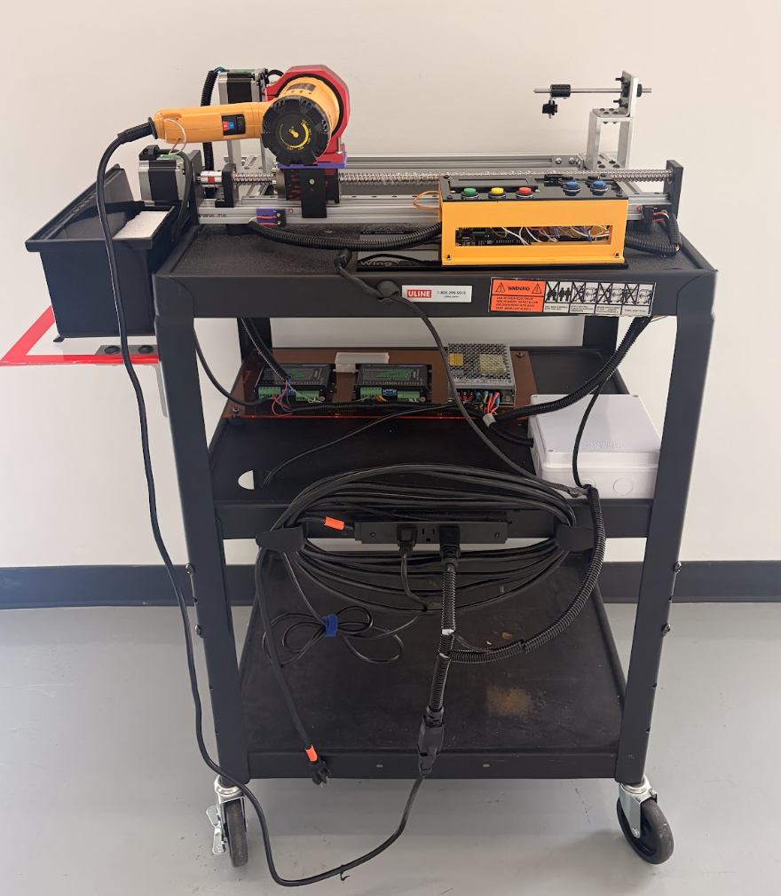
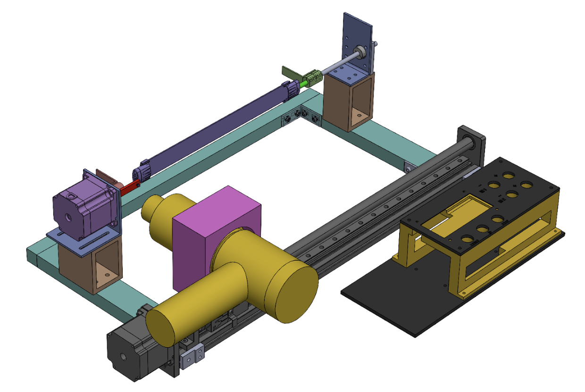
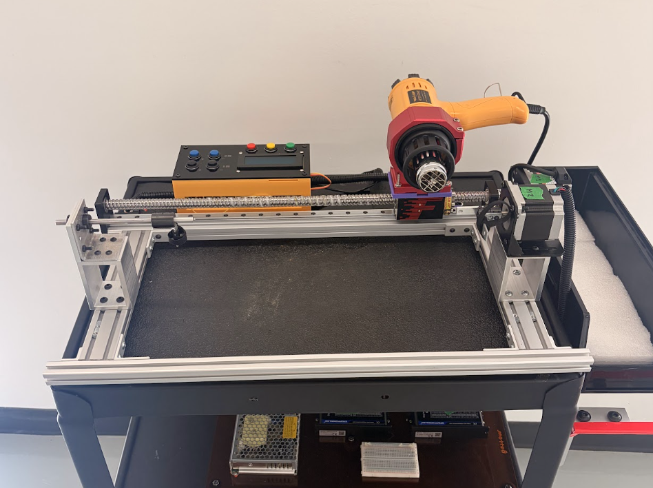
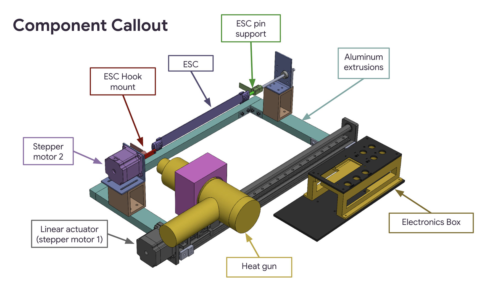
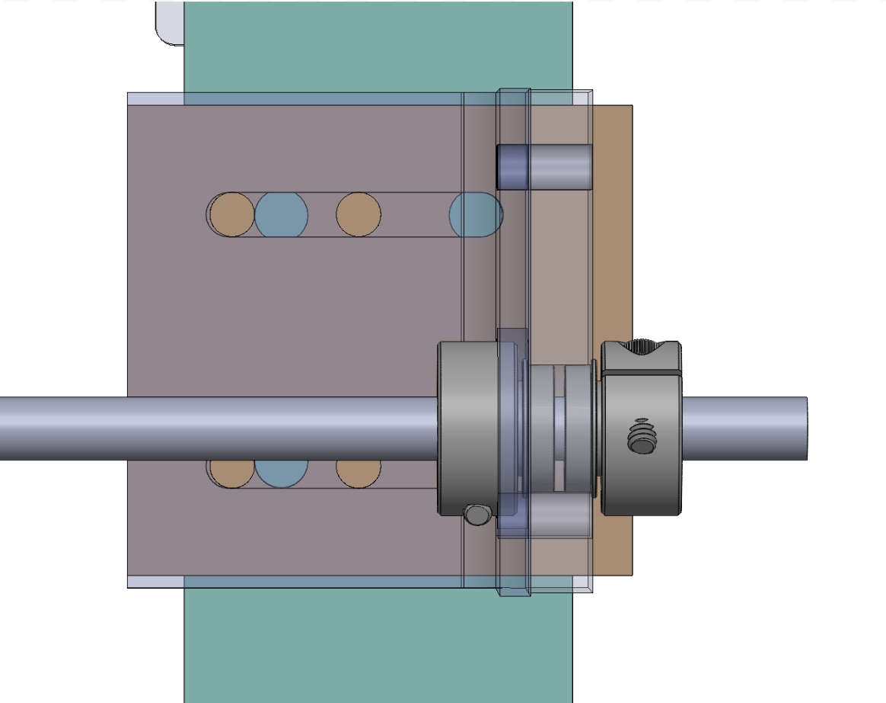
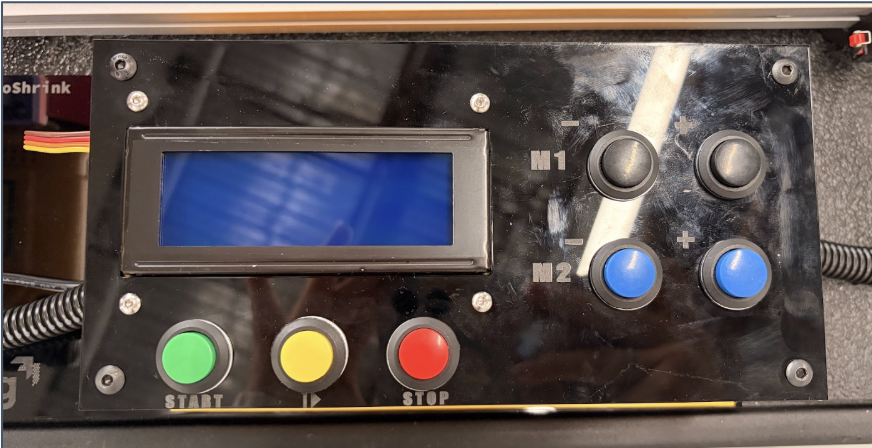
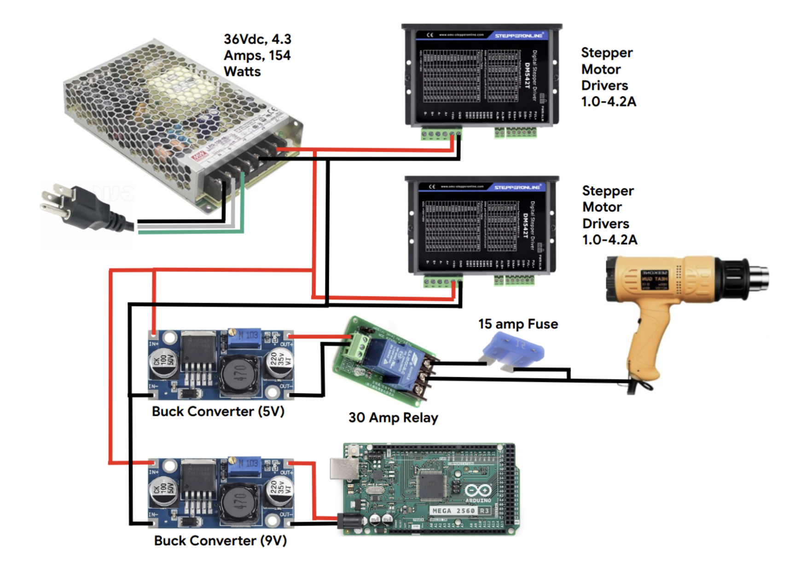
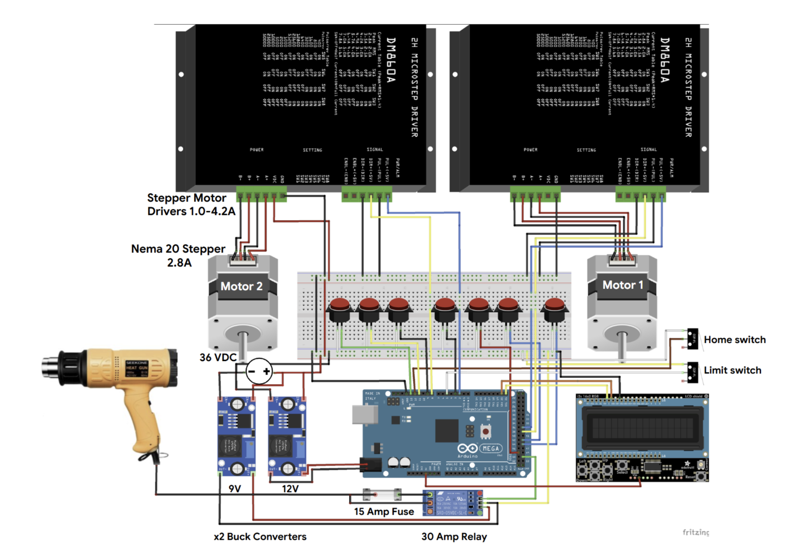
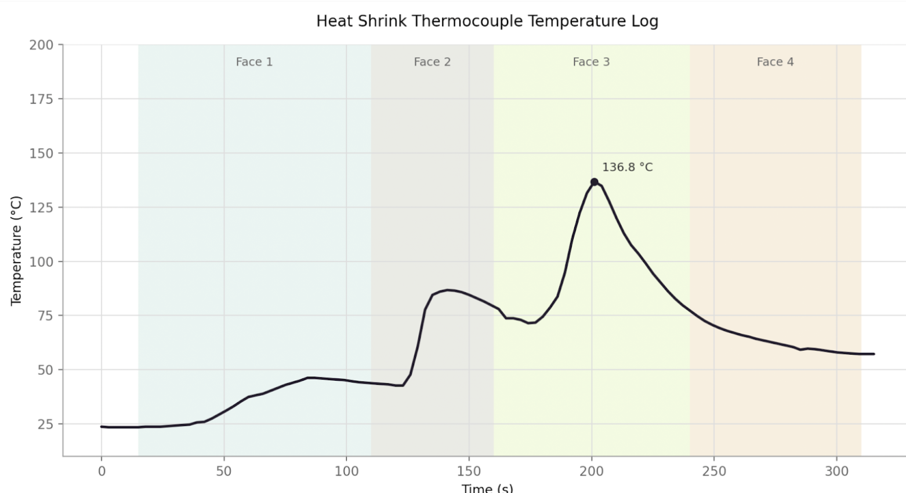

Wing Manufacturing Process Engineering Internship
ESC AutoShrink
Manufacturing Process Engineer Intern | June 2026 – September 2026



Project Overview
Over the summer of 2026, I worked as a Manufacturing Process Engineer Intern at Wing, a drone delivery company, in San Francisco. My work centered on two main projects: designing and building a special purpose machine (SPM) to automate the heat-shrinking process for Electronic Speed Controllers (ESCs), and developing new manufacturing process steps for the NAV-C assembly line.
Across both projects, I owned the process end-to-end — from requirements and brainstorming through mechanical design, electronics, controls, fabrication, testing, and documentation — with the goal of making manufacturing more consistent, repeatable, and less dependent on manual operator work.
Project 1: ESC AutoShrink
Goal: Develop a proof-of-concept SPM that automates the heat-shrinking process for ESCs, replacing a fully manual process with something consistent and repeatable.
The design I landed on used one heat gun mounted on a horizontal belt-driven linear actuator, paired with a rotary axis that turns the ESC roughly 90–270°. The two axes work together: the linear axis moves the heat source along the length of the ESC, while rotation changes which face is exposed to heat. I chose this architecture because it kept a small footprint, moved the bulky heat source rather than the ESC and its harness, and left room for future tuning of motion and heating parameters.

Mechanical Design
The mechanical system breaks down into three subsystems:
- Linear actuator system: A FUYU 450 mm stroke linear actuator, chosen for its stroke length and aluminum framing. A stepper-driven carriage carries the heat gun via a connector plate and custom mount, with mechanical limit switches added to the frame.
- Aluminum framing: Aluminum extrusions gave me the flexibility to tune the frame after fabrication — especially useful when adjusting the distance between the ESC and the heat gun nozzle.
- Rotary system: A linear motion shaft assembly using two flanged bearings and brass shim spacers to eliminate axial play, paired with custom ESC holders (hook mount and pin support) that mate to features already on the ESC for repeatable alignment and datuming.


Electronics & Control System
The electrical layout was driven by user experience: a single wall connection powers everything, including both stepper motor drivers, the Arduino, and a 30 amp relay, through one shared power supply. I designed the power distribution and full electrical schematic, then built and wired a custom electronics box — complete with a 3D printed enclosure, laser-cut acrylic mounting plate, and a user interface panel with Start, Pause/Resume, Stop, and jog buttons for both motors.
On the controls side, I wrote the firmware as a single finite state machine layered on top of a data-driven sequence table, rather than a long hand-written chain of states. States include homing, a multi-pass heating sequence, and an emergency stop, with the speed, position, rotation angle, and dwell points of each pass fully tunable.


Fabrication, Testing & Performance
Most parts were off-the-shelf components modified in the machine shop, with a small number of fully custom and 3D printed parts. After a dedicated week of testing and tuning, I settled on a four-pass heating sequence — preheat, then heat each of the ESC's four faces with rotation in between — with extra dwell time over the MOSFETs, since good heat shrink contact there mattered most for performance.

Looking ahead, immediate improvements identified include homing the second motor, adding a feature to detect when the heat gun stops working, further tuning of speed and dwell parameters, and eventually closing the loop with real-time temperature feedback.
Lessons Learned
This internship pulled together four areas of growth. In engineering design, I practiced iterating and refining through proof-of-concept development and fixture design. On the manufacturing and hardware side, I gained hands-on experience with off-the-shelf components, soldering, cable modification, and power systems. On process, I learned to use PFMEA to balance risk against a tight schedule. And throughout, I sharpened my technical communication by documenting every stage of the build and asking questions early.
Video Demos
Skills and Tools
Mechanical Design: SolidWorks CAD, mechanism design, linear & rotary system design, tolerancing, DFM, design reviews, prototyping, system integration
Manufacturing: Machine shop fabrication, off-the-shelf part modification, 3D printing, laser cutting, assembly, fixture design
Electronics and Controls: Arduino programming, finite state machines, motor drivers, power distribution, relays, wiring, soldering, electrical troubleshooting
Process Engineering: PFMEA, process step design, risk analysis, testing & experimental evaluation, technical documentation